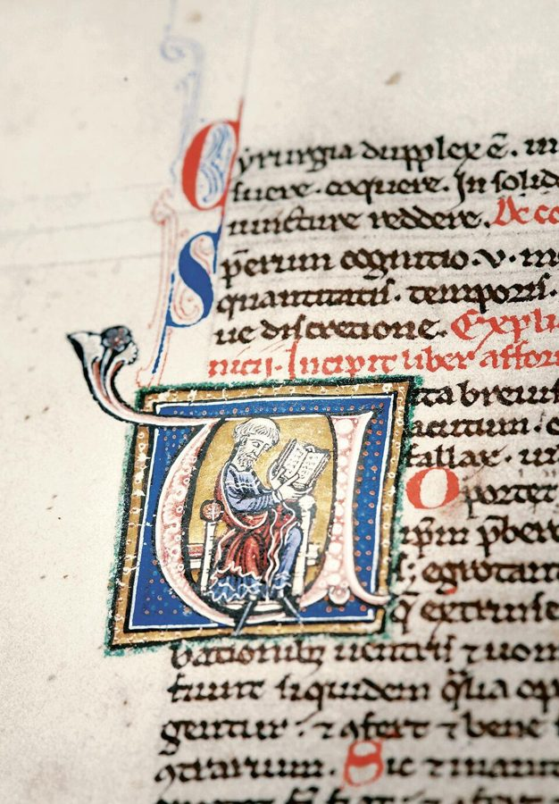
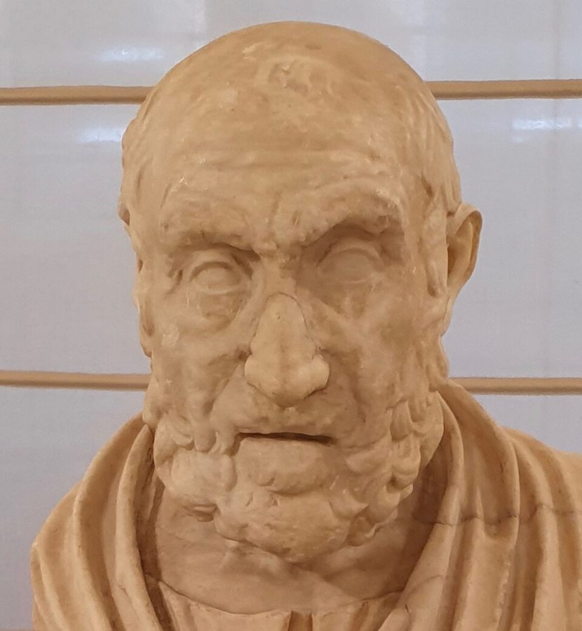
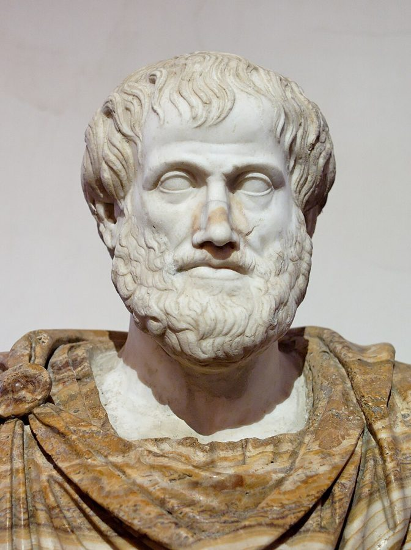
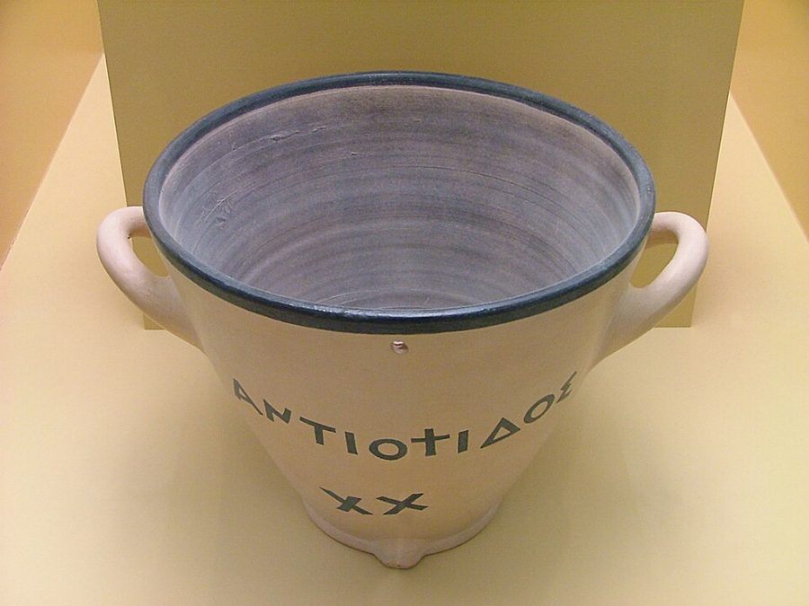
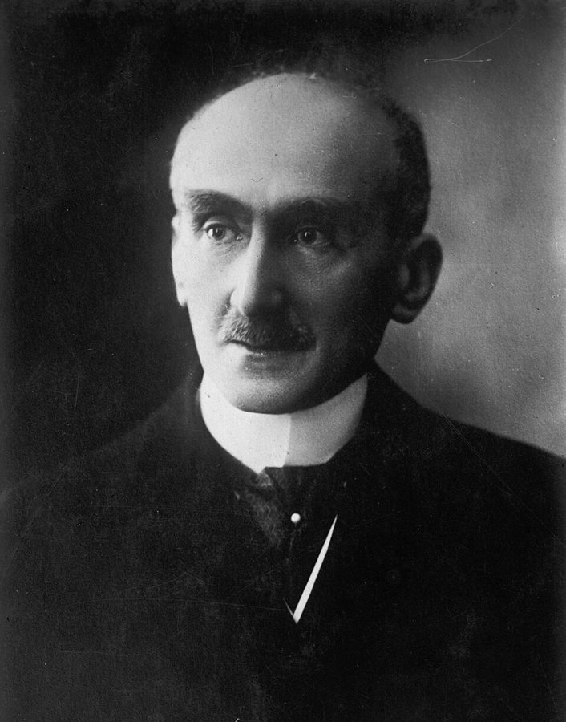
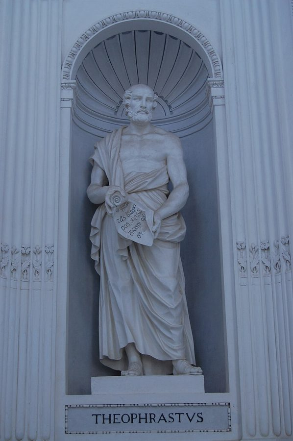

fall into disuse
… its ethical content-fallen into disuse.
不再有人用
句子被一段插入语隔开了：this oath（但愿不包括它的伦理内容）has fallen into disuse。电子书里破折号成了连字符，content-fallen 中间其实是个破折号。
这一页只有一节，却是全书的地基。作者从希波克拉底那句「生命短，技艺长」讲起：先拆这句箴言的字面（art 指什么，「长」是往哪个方向长），再看它的全文、希腊文的句式、后世的译法和注释；然后换人，讲亚里士多德怎样想时间，拿来和希波克拉底对照；最后讲泰奥弗拉斯托斯的遗言和死因。读的时候抓两条线：作者给这句箴言里的落差起的名字「时间剪」，和他在两种时间观之间怎么选。

这是全书的第一页，作者在这里埋了很多后文：亚里士多德那种时间观的问题，第 21 段说留到尾声再谈；摆脱「时间剪」的两条路，第 2 章和第 5 章里会分别看到；时间像钱这个比喻，第 3 章的富兰克林才把它说到头。第 31 段说「人生之弓」见第 3 章第 2 节，其实在第 2 章第 1 节，翻过去找不到不是你的问题。
一句两千多年前写给医生的箴言，凭什么能当一整本讲时间的书的起点？作者要谈的是哪一种时间？
读的时候带着这几个问题。不用先找答案，读完回来对照「检查一下理解」。
这一节三千多词，中间有两处花饰分隔，分成三段。第一段最长，绕着一句箴言打转：字面、全文、希腊文的句式、拉丁文英文德文的译法、盖伦的注释，到第 17、18 段把箴言变成一个问题：这道落差能不能改？第二段突然换人，讲亚里士多德怎样把时间想成空间里的运动。这一段是拿来作反衬的，读到第 26 段作者亮出立场，才知道为什么要绕这一圈。第三段很短，讲泰奥弗拉斯托斯，看上去像闲笔，其实埋下了时间像钱的比喻。读的时候觉得「怎么突然跳到亚里士多德」，是作者有意这样对照。
作者落在哪：作者不用亚里士多德那种照空间和运动量出来的时间，改用「希波克拉底的方法」：时间是人一生长短的量，看来原则上是短的。既然短，就要服从经济的法则：用最少的手段求最大的效果。这是全书的出发点。
这一页是原书第 1 章的第 1 节。粗体是这一节的主角；斜体是英文这一节开头的几个词，在电子书里搜它就能跳到那里；节里的转折用段号点出来。读完打个勾。
作者常常一笔带过、默认你懂的概念，这里先从书外讲一遍：它从哪来，是什么意思。它在这一页起什么作用，看每块最后一句。讲过的概念都汇总在概念汇总。
希腊文 technē 是今天 technique、technology 的词根。古希腊人说的 technē，是一套讲得出道理、能教能学的本事：医术、造船、修辞、建筑都算。它和两样东西不同：一是只凭经验、说不出所以然的熟练，二是浪漫派以后说的「艺术」，那种靠天才和灵感、教不会的创作。拿程序员熟悉的事打比方，technē 更像「工程」：有规则、有方法，要很多年才能学到独当一面。拉丁文把它译成 ars，英文 art 原先也是这个意思，今天只在 the art of war、liberal arts 这类说法里还留着。
在这一页：第 5 段，作者提醒不要拿现代的「艺术」去读 art：技艺要花很长时间才学得会，生命才显得短。
德文 Schere 是剪刀，Zeitschere 字面是「时间的剪刀」。这个说法出自德国哲学家 Hans Blumenberg 1986 年的书《生命时间与世界时间》（Lebenszeit und Weltzeit），书的第二部分就叫「时间剪张开」：一个人能活的时间是有限的一刃，世界要花的时间（值得知道、值得经历的东西）是另一刃，两刃越张越开。剪刀还让人想到希腊神话里的命运女神，最后一位负责剪断生命之线。英译作 time-shear，shear 也是剪。可以想成一张需求越堆越多、人手却固定的任务清单：差距不会自己合上。
在这一页：第 5 段起名，第 15–18 段反复用，指生命短和技艺长之间的落差。第 18 段说全书要看人们想出的各种对付办法。
亚里士多德在《物理学》第四卷里先讲「处所」，再讲时间。他的定义是：时间是运动按照「之前和之后」被计的数。意思是：时间本身不是运动，而是运动可以被数、被量的那一面，好比看秒针走过了多少格。所以没有变化，就觉察不到时间；而量运动离不开空间，这种时间观就和空间绑在了一起。后来批评它的人把这叫时间的「空间化」：时间被想成一条可以切段、可以比快慢的线。钟表、日程表、甘特图，都是这样想时间的。
在这一页：第 20–25 段，作者拿它作反衬，还指出 proteron / hysteron 本来更像空间上的「前面 / 后面」。
法国哲学家柏格森在 1889 年的《论意识的直接材料》里提出：我们平常把时间想成一条线、一格格刻度，其实是拿空间去想时间；意识里真正经历的时间是「绵延」，前后互相渗透，切不成均匀的小段。听一段旋律时，每个音都带着前面的音，把它拆成一个个孤立的音，就不再是那段旋律了。柏格森因此批评，从亚里士多德以来的哲学把时间「空间化」了。
在这一页：第 21 段只提了个问题：能不能用绵延这样的概念替换空间模型？作者说留到全书的尾声再回答。
「时间就是金钱」一般归到美国的富兰克林名下，出自他 1748 年的《给一位年轻商人的忠告》。可是把时间当成能花、能省、能浪费的财物，这个想法要早得多。古罗马的塞涅卡劝人像守住钱财一样守住时间；更早的泰奥弗拉斯托斯，据第欧根尼·拉尔修记载，常说最贵的花费是时间（《名哲言行录》第五卷第 40 节）。这个比喻让时间变成可以记账的东西，也留下一个问题：钱花掉了能再挣，时间花掉了挣不回来。
在这一页：第 28 段，泰奥弗拉斯托斯那句话是作者找到的源头。这个比喻后面在塞涅卡、阿尔贝蒂、富兰克林那里一再出现。
按在书里出现的顺序排，标题前是节号。作品只讲到读懂这一节需要的程度。
希波克拉底（Hippocrates，约前 460–约前 370）生在爱琴海的科斯岛，被称为「医学之父」。以他的名字传下来的几十部医书合称《希波克拉底文集》，其中很多不是他本人写的，书里第 18 段也这样提醒。《箴言》（Aphorisms）是文集里最出名的一部，一条条短句，讲诊断、预后和治疗。书里说它有 87 条；通行本其实分七卷、共四百多条，87 恰好是第七卷的条数。第一卷第一条的头一句，就是这一页的主角。

第 4 段和第 11 段为了说明「短」和「长」，一口气提了三个人，作者没有介绍。
盖伦（Galen，约 129–约 216）是希腊医生，在罗马行医，给希波克拉底的著作写过大量注释；他的医学在欧洲和伊斯兰世界影响了一千多年。书里转述了他的一个解释：学医的人没有时间读长篇大论，所以希波克拉底写成一句句短话。作者拿这个解释说明，写短本身就是对付时间剪的一个办法；第 16 段又说这个办法有代价。aphorism 这个词来自希腊文，原义是「划出界限、下定义」。
拉丁文的说法今天最常见的是 Ars longa, vita brevis，技艺在前；书里第 12 段写作 vita brevis, ars longa，和希腊原文的顺序一致。第 13 段引的乔叟那一句，是长诗《百鸟议会》（The Parliament of Fowls，约 1380 年）的第一行，用的是中古英语：在那首诗里，「学不完的技艺」说的是爱情。第 14 段的德文，书里说是德国医学和哲学著作里通常的译法。歌德在《威廉·迈斯特的学习时代》第七卷的「学徒证书」里化用过这句，写作 Die Kunst ist lang, das Leben kurz，技艺在前。
亚里士多德（Aristotle，前 384–前 322）比希波克拉底晚两代，在雅典的吕克昂（Lyceum）办学。他的学派叫「逍遥学派」（Peripatetic），一般说法是他们在学园的柱廊（peripatos）里边走边讨论；作者拿这个名字打趣：连学派的名字都带着空间里的走动。《物理学》第四卷先讲处所和虚空，再讲时间（第 10–14 章）。第 24 段说的水钟（klepsydra），是靠水流计时的陶罐，雅典的法庭用它给发言限时。


柏格森（Henri Bergson，1859–1941），法国哲学家，1927 年获诺贝尔文学奖。书里第 21 段说他「直到二十世纪初」才提出对时间空间化的批评；其实 1889 年的《论意识的直接材料》里就有了，1907 年的《创造进化论》又把矛头指向从古希腊起的整个哲学传统。作者在这里只是点到，真正和柏格森对话要到尾声。

泰奥弗拉斯托斯（Theophrastus，约前 371–约前 287）接替亚里士多德主持吕克昂，写过植物学，最出名的是《品格论》（Characters）：三十篇小速写，每篇画一种讨人嫌的人。法国作家拉布吕耶尔（La Bruyère）把它译成法文，1688 年和自己写的《品格论》合印；书里印作 1645–98，一般记作 1696 年去世。书里那句「最贵的花费是时间」、活到 85 岁和那首诗，都出自第欧根尼·拉尔修（约 3 世纪）的《名哲言行录》。

下面这几段在你的电子书里是图片，长按查不了词，也搜不到。每块先说它在屏幕上的位置，再逐行给中文意思；行首的斜体是图里这一行开头的几个词，用来和图对上。古人的诗本站据原作的语言译，不从英译转译。
在第 8 段末尾（…the Greek original goes like this:）之后。
在第 29 段末尾（…worthy of a few lines of verse:）之后。原诗是希腊文，本站据希腊原文（也收在《希腊诗选》第七卷第 110 首）译，按英译的分行给意思。
大意：英译第 1 行的「相信这话」、第 2 行的「聪明人」、第 3、4 行的「满怀热情」「快乐」，希腊原文都没有，是转译时加的。原文里「完好无损」和「手脚残损」是一对反义词，诗的劲道全在这里。
你用 Kindle，单个生词长按就能查，这里只收词典帮不上的：每个词都认识、合起来不懂的说法，学术腔，没翻译的外文，典故。斜体小字是原句里连续的几个词，错字照电子书原样，搜它就能跳到那里。图里的词在上面「图里的引文」里。
读不通的扫描错字：
读完这一页的几节再看。下面是作者在这几节里的论点，由本站按论点重新组织，不按原书的顺序；每条右上角是依据所在的段落，拿不准就回书里那几段再读一遍。
art 指要很多年才学得会的技艺，首先是医术；和它比，人的一生显得太短。作者借布鲁门贝格的词，把这道落差叫作时间剪。他也提醒，makrē 可以读成「高」：技艺再高也是人的尺度，在希波克拉底那里，生命也许没那么短。
§1 第 5、11 段箴言里藏着一个问题：这道落差只能认命，还是能靠有意的行动改变？作者说，历史上想出的办法归成两类，也可以并用；医生替病人保健、延寿，走的就是前一条。全书要看的，就是这些办法。
§1 第 17、18 段盖伦认为，希波克拉底写得短，是替没时间读长书的人着想，这就是缩短技艺。作者补了一句：越短的话越需要注释，几百年的注释越堆越厚，算下来像一场零和游戏，时间剪最后还在。
§1 第 15、16 段亚里士多德照空间想时间：时间是运动的数，运动是路上的行走或天上的圆周，可以用水钟、日晷量。希波克拉底想的却是竖直的、缓慢的生长。作者宣布，后面各章不用亚里士多德式的时间观，改用「希波克拉底的方法」。
§1 第 22–26 段作者套用亚里士多德的句式，把时间定义成人的一生按较短和较长计的量。照这个框架，时间看来原则上是短的，于是服从经济的基本法则：用最少的手段求最大的效果。把时间看成最贵的花费，可以追到泰奥弗拉斯托斯。
§1 第 26、28 段合起来：这一节给全书定了框架：作者不谈亚里士多德那种照空间和运动量出来的时间，只谈人一辈子那点有限的时间。时间不够，所以要算计、要节省、要想办法和它周旋；后面各章，就是一个个人怎样周旋的例子。
Either we can attempt to lengthen all-too-short life or to shorten all-too-long art.— §1 第 18 段。本站译：要么设法延长太短的生命，要么设法缩短太长的技艺。
Either … or … 两边完全对称：lengthen 对 shorten，all-too-short life 对 all-too-long art，连 all-too- 都重复了一遍。all-too 对应德文的 allzu（尼采有本书叫《人性的，太人性的》，英译 Human, All Too Human），带着「过分了」的抱怨口气。第 2 章和第 5 章分别走这两条路，书里也有两条路之外的办法。
In this way brevity produces new lengths— §1 第 16 段。本站译：短就这样生出了新的长。
七个词，自己就是一句格言：作者在说格言的毛病，用的正是格言的写法。brevity 和 lengths 一抽象一具体，lengths 用复数，指一卷卷注释的篇幅。读到这里可以停一下想想：这句话本身要不要注释？
先在心里答，再点开。答错的那题，回书里把对应那一节再读一遍。
希腊文是 technē，指能讲出规则、能教能学的成套知识，首先是医术，不是靠天才和灵感的艺术。正因为要很长时间才学得会，生命才显得短。
技艺的「长」是往上长的高度，像人长个子，是人的尺度，不是无穷无尽。这样看，在希波克拉底那里，生命也许没有那么短。
生命短，学技艺的人没时间读长书，所以写成短句。作者说越短的话越需要注释，几百年的注释越写越厚，等于一场零和游戏，时间剪最后还在。
延长太短的生命，或者缩短太长的技艺，两者也可以并用。希波克拉底作为医生，替病人保健、延寿，做的就是前一件。
亚里士多德想的是空间里的运动：直线上的行走、赛跑，天球的圆周运动，可以用水钟、日晷量。希波克拉底想的是竖直方向的生长，慢得几乎看不出来，像孩子长成大人。
借的是亚里士多德的句式，把「运动」换成「人的生命」，把「之前和之后」换成「较短和较长」。这样定义出来的时间，看来原则上是短的。
据第欧根尼·拉尔修，他到老年放松了工作，因此死了，活到 85 岁。他生前常说最贵的花费是时间，作者把这当作「时间像钱」这个比喻的早期出处。
用一句话说这一页，写给一个没读过的人。
想一想：你手上有没有一门「技艺长」的本事，比如一门外语、一种乐器、一个技术领域？照你现在每周投进去的时间，这辈子能学到什么程度？要是不够，你会想办法多挤时间，还是把目标缩小？
读过又忘了，从这里想起来。挑的是这一页最值得记住的人、说法和比喻，不按原书顺序；每条后面是节号，想细看就回书里那一节。全书各页的这一节都收在全书回顾。
一句话：全书从希波克拉底的「生命短，技艺长」出发：作者把这道落差叫作时间剪，不用亚里士多德照空间量出来的时间，只谈人一生的、原则上短缺的时间。
希波克拉底《箴言》第一条的头一句。art 是能教能学的技艺，首先是医术，学成要很多年，所以生命显得短。
§1作者借布鲁门贝格的词，把生命短、技艺长之间张开的落差叫作时间剪。对付它有两条路：延长生命，缩短技艺。
§1盖伦说箴言写得短是为了省学生的时间；作者说短话招来一卷卷注释，省下的时间又赔了回去。
§1亚里士多德把时间想成空间里的运动，可以用水钟量、可以比快慢。作者打趣说，这样一来时间像穿上了带翅膀的跑鞋。
§1泰奥弗拉斯托斯常说最贵的花费是时间。他到老一放松工作就死了，第欧根尼·拉尔修为此写诗：智慧的弓一松就断。
§1